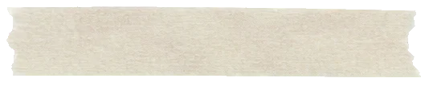
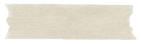
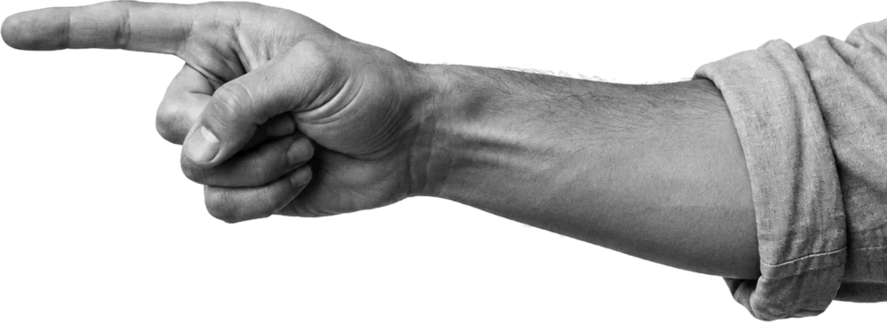

Cut it out. Paste it in.
How Tabula looks: an art magazine about working together. Real things pasted onto cream paper, on a strict grid, in ink, cobalt and one red.
This page is built with the profile itself, fromtokens.css and the asset kit. Written guide: docs/brand.md.




In this issue.
Eleven pages, the same as in docs/brand.md. Jump to any of them.
- 01EssenceWhat the profile says.
- 02WordmarkTabula, with a red square.
- 03ColourPaper, ink, cobalt, one red.
- 04ContrastEvery pair, light and dark.
- 05TypeBodoni Moda and Instrument Sans.
- 06LayoutTwelve columns, 8 px steps, bands.
- 07MotifsTorn paper, tape, cutouts, marks.
- 08MotionPlay once, then stay still.
- 09IllustrationBriefs for Codex.
- 10VoiceStatement, italic turn.
- 11Asset kitFiles to download.
Paste your thinking together.
The collage is what a team does on a board: bring pieces, pin them down, circle what matters. The editorial frame says it is considered and made by people.
- Local-first: yours before it is anyone's
- Open source, free to self-host
- A tool for teams, not a gadget
One word, one square.
Bodoni Moda ExtraBold, tracked −0.02em, and a square full stop. Outlined in SVG, so no font is needed.
- PaperInk letters, red square.
ink.svg - Light paperInk letters, red square.
ink.svg - InkLight letters, red square.
paper.svg - CobaltAll light paper.
on-cobalt.svg - RedAll light paper.
on-cobalt.svg
- Face
- Bodoni Moda 800, optical size 28, tracking −0.02em
- Square
- 0.30em, 0.22em after the "a", on the baseline
- Colours
- Ink
#121216, red#D42A18 - Minimum
- 80 px wide on screen, 20 mm in print
Don'ts
- Tilt, tear, tape or collage it. The name is set straight.
- Recolour the letters red or cobalt.
- Put the red square on cobalt (1.26:1).
- Swap the square for a dot, a period or an asterisk.
- Outline it, shadow it, stretch it or retype it.
- Set it on a busy cutout or under heavy grain.
Cream paper, one red.
Six colours, the same hex in every page and every image brief. The numbers on each chip are measured live in your browser.
- AaInkRed
Paper
#ECE9E2 · --tb-c-paperPage ground. The dominant colour.
- AaInkRed
Light paper
#F7F5F0 · --tb-c-paper-hiTorn sheets, panels, header, board ground.
- AaLightRed
Ink
#121216 · --tb-c-inkText, rules, buttons, ink bands.
- AaLightInk
Cobalt
#2347F5 · --tb-c-cobaltFull-width bands, focus rings.
- AaLightInk
Red
#D42A18 · --tb-c-redThe full stop, italic turns, numerals, marks.
- AaOn paperOn light
Grey
#55555C · --tb-c-greySecondary text on paper and light paper.
Paper dominates. Cobalt carries whole sections, ink appears once or twice a page, and red is only ever an accent: never a full band, never body text on cream.
Allowed text
- Ink on paper and light paper: everything
- Grey on paper and light paper: secondary text
- Light paper on cobalt, ink and red: everything
- Red on light paper: any size
- Red on paper: large text only, like the italic turn
Never
- Ink on cobalt, cobalt on ink (2.93)
- Red on cobalt, as text or as a mark (1.26)
- Ink on red for body text (3.69)
- Red body text on cream (4.18)
Every pair, measured.
WCAG 2: text 4.5, large text 3, marks and rules 3. The dark scheme is a proposal: ink ground, light text, lighter red and cobalt.
Two faces, one turn.
Bodoni Moda for display, Instrument Sans for everything else. One italic word per headline.
Tabula is an infinite whiteboard for teams. It works offline in your browser and syncs live the moment everyone is in the room.
Body copy at 17 px, line height 1.55, at most 60 characters a line. Labels are the only uppercase text: 0.8rem, weight 700, tracked 0.18em. Strong text is weight 600.
- step 75.1remh1
- step 64.06remh2
- step 42.6remNumerals
- step 32.08remWordmark
- step 21.66remCard titles
- step 11.33remLede and h3
- step 01.0625remBody text
- step −10.8remLabels
Don'ts
- A third typeface, or Bodoni for body text or anything under 17 px
- A whole headline in italic: one turn, at the end
- All-caps or letter-spaced Bodoni, underlined headlines
- Light Bodoni weights at display size
A strict grid underneath.
The collage can tilt because the grid never does. Twelve columns, 24 px gutters, 1320 px at most.
A feature slice: copy on 5 columns, art on 6, one empty column between. The next slice mirrors it. Margins 32 px, 16 px on phones; below 900 px the copy stacks above the art.
Spacing, 8 px steps
- 4
- 8
- 16
- 24
- 32
- 48
- 56
- 72
- 96
- 120
Sections: 120 px top and bottom, 72 px on phones. Section heads: 56 px to the content.
Section rhythm
- 00Hero, art rightcream
- ·Contents index, torn sheetlight paper
- 01Slice, art rightcream
- 02Slice, art leftcobalt
- 03Strip of four cardscream
- 04List on a torn sheetcobalt
- 05Full-width torn stripcream
- 06Slice, art leftink
Never two bands of one colour in a row. One focal point per section.
Eight pieces, used sparingly.
Per section: at most one red block, one cobalt block, two tape strips, two cutouts and one mark.
-
Torn paper
- When:
- sheets that hold text, and full-width strips (
--tb-torn-x). - How much:
- one torn panel per section, tilt up to 2.4°, 16 px padding inside.
- Don't:
- tear buttons, fields, photos, the header or the wordmark.
-
Tape strips
- When:
- to pin a sheet or the board to the page.
- How much:
- one or two per piece across a corner, about a quarter of its width, 4° to 38°.
- Don't:
- tape over text or the wordmark, or use tape as a divider.
-
Cut-out photos
- When:
- one real object that stands for the section, or a hand that points or writes.
- How much:
- one or two per section, greyscale, multiplied onto paper.
- Don't:
- colour photos, faces, logos, glossy stock objects.
-
Hand marks
- When:
- to point at the one thing that matters: circle, underline, asterisk, tick, arrow.
- How much:
- one per section (this demo breaks the rule to show three).
- Don't:
- write words, draw connectors, or put red on cobalt.
-
The pasted board
- When:
- wherever the product appears: the real UI, mounted on light paper, hard ink shadow, tilted about 1.3°.
- How much:
- one per section; it is the focal point.
- Don't:
- redraw it as an illustration; draw connectors as an SVG overlay, never in the image.
-
Named cursors
- When:
- on or near the board, to show people working together.
- How much:
- up to three in the hero, one in a slice; 36 to 40 px, solid fill, light edge.
- Don't:
- real people's names, thin outline cursors.
-
Paper texture
- When:
- once, fixed over the whole page.
- How much:
- multiply at 0.2 (screen at 0.06 in dark).
- Don't:
- stack it, raise it, or texture single elements.
-
Paper scraps
- When:
- to back a cutout, or as the colour block behind a sheet.
- How much:
- one scrap per composition: red, cobalt, light paper or newsprint.
- Don't:
- stack scraps into a pile, or tear text into them.
Play once, then stay still.
Four to six moments a page. Each plays when it comes into view, never again. Only transform, opacity and stroke.
-
Settle and tape press
Fade 500 ms, move 800 ms, 100 ms stagger. The tape lands 3° off and eases to rest.
-
Lines draw
Connectors and guides draw themselves in 700 ms with stroke-dashoffset; the arrowhead appears as the line arrives.
-
Cursor glide
A named cursor glides about 40 px onto its note in 800 ms, once.
-
Fill and drop
Bars fill in 900 ms; vote dots drop 28 px in 600 ms, 100 ms apart.
-
Idle sway
The only loop: one hero cutout turns 0.6° over 8 s, back and forth, 2 s after it settles.
-
Hover lift
A paper card lifts 3 px and shows its ink shadow. Hover only, no loop.
Motion is off: your system asks for reduced motion (or JavaScript is off), so every demo shows its end state.
- Easing cubic-bezier(0.2, 0.7, 0.2, 1) for everything but the sway
- No parallax, scroll-jacking, marquees, word-by-word type or stepped timing
- Content shows without JavaScript; reduced motion shows the end state
Generated, never drawn.
All art comes from Codex image briefs. SVG is only for cursors, glyphs and overlays such as connectors and guides.
- paper #ECE9E2
- light paper #F7F5F0
- ink #121216
- signal red #D42A18
- cobalt blue #2347F5
- neutral greys
Use your image generation tool to create <N> image options, saved in the current directory as option-1.png … option-<N>.png (each <ASPECT>, about <W>x<H>). Subject: <SUBJECT: what, pose or angle, how it is cut off>. <MEDIUM: "A strictly greyscale editorial photograph, high contrast, slight film grain, soft natural shadow." or "Drawn with a thick felt marker in <HEX>, slightly uneven line weight and dry-brush edges, like real ink on paper."> Background: perfectly plain <pure white #FFFFFF | flat magenta #FF00FF with no shadows on it>, seamless, no floor, no table. PALETTE (use only these exact colours): paper #ECE9E2, light paper #F7F5F0, ink #121216, signal red #D42A18, cobalt blue #2347F5, plus neutral greys. Style: avant-garde art-magazine collage (editorial, monochrome photography with one or two bold accent colours). Hard rules: no text, no lettering, no numbers, no logos, no watermarks, no real or recognisable people, no faces, no connector lines or arrows between objects, no recognisable artworks, no stock-photo look, no earthy brown or terracotta tones. AVOID: <SPECIFIC AVOIDS: colour, other objects, borders, frames>
- Cutout object · 1:1
A stopwatch
One object, whole, wide margins, pure white. Key the white out afterwards.
Full prompt
Create 2 options (square 1:1, about 1200x1200). Subject: a single vintage stopwatch with a plain face and no numbers, photographed from slightly above, whole object in frame with wide empty margins. A strictly greyscale editorial photograph, high contrast, slight film grain, a very soft small shadow. Background: plain pure white #FFFFFF. Palette, style and hard rules as in the template. AVOID: colour, other objects, hands, borders.
- Hand gesture · 4:5
A hand with a pen
Enters from one edge, plain sleeve, no jewellery, no face.
Full prompt
Create 3 options (portrait 4:5, about 1200x1500). Subject: an adult hand and forearm entering from the right edge, plain unbranded rolled-up sleeve, holding a thin marker pen about to draw. Hand only: no face, no jewellery, no tattoos. A strictly greyscale editorial photograph, high contrast, slight film grain, soft natural shadow. Background: plain pure white #FFFFFF. Palette, style and hard rules as in the template. AVOID: colour, text, other objects, frames.
- Hand mark · 3:2 sheet
Marker marks
Six marks on one sheet, an even grid, red and cobalt felt marker.
Full prompt
Create 2 options (landscape 3:2, about 1800x1200). Subject: a sheet of hand-drawn marker marks in an even 3 by 2 grid, none touching: an imperfect oval circle, a wavy underline, a curved arrow with an open head, an asterisk, a pair of brackets, a tick in a loose circle. Thick felt marker in signal red #D42A18 (four) and cobalt blue #2347F5 (two), uneven line weight, dry-brush edges. Background: plain pure white #FFFFFF. Palette, style and hard rules as in the template. AVOID: text, letters, numbers, other colours, shadows, paper texture, gradients.
Avoid
- Lettering, logos and brands
- Connectors or arrows inside an image
- Recognisable artworks, people or faces
- Glossy stock looks, gradients, colour photos
- Cafe clichés, globes, suns, earthy browns
Post-processing
- Crop each piece from its sheet with ImageMagick.
- Marks: fill with the token colour, alpha from the ink density.
- Photos: remove the white connected to the edge, or keep the white and multiply onto paper.
- Paper and tape: key the magenta out.
cwebp -q 85 -alpha_q 100at 2× the CSS width; under 250 KB each, 350 KB for a hero.
Statement, italic turn.
A plain statement, then a short turn in italic. Short sentences, real features only.
Paste your thinking together.
HeroOne board, no edges.
01 The boardRun the room, not the tool.
02 SessionsYours first. Then everyone's.
05 OfflineStart a board. Cut the rest.
Final call
- The page speaks like a magazine: "In this issue."
- No hype, no "AI-powered" badges, no invented social proof
- In the app and the docs, plain English as before
Everything, ready to paste.
About 0.45 MB in design/brand/assets/. Images are WebP with alpha.
Wordmark
Outlined SVG, three colourways.
Hand marks
Solid red or cobalt, alpha.
Cutouts
Greyscale, alpha. Multiply onto paper.
Paper
The page grain and four torn scraps.


The licence is an open question: the proposal is CC BY 4.0 for the art, with the name and the wordmark reserved. Read LICENSE.md.